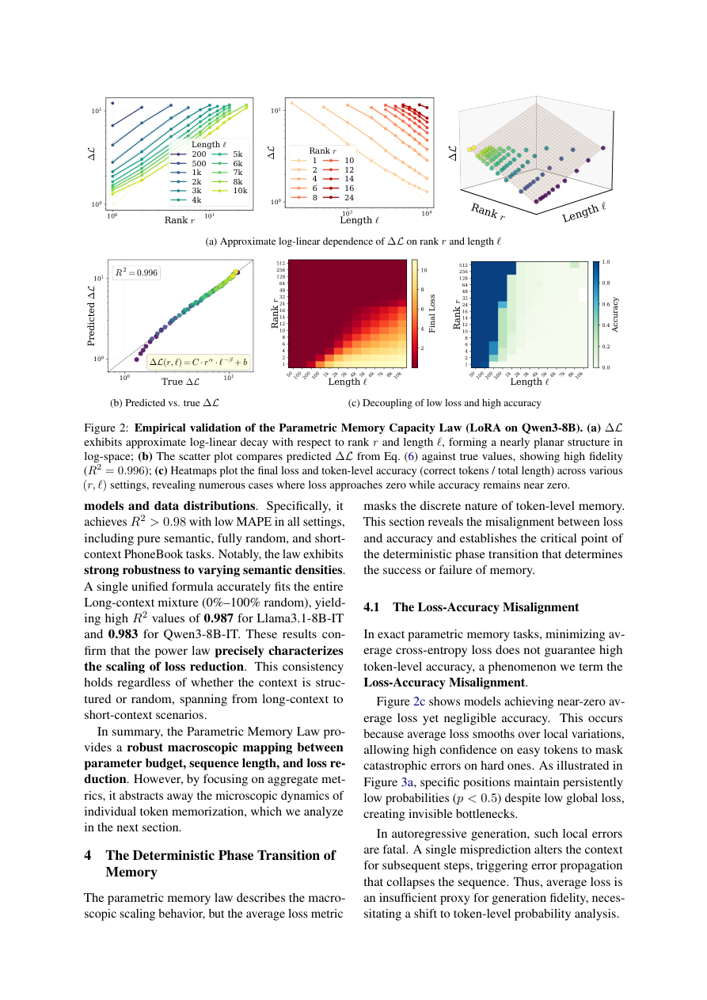

#1
★ 7/10
How LoRA Remembers? A Parametric Memory Law for LLM Finetuning
LoRA 如何记忆？大语言模型微调的参数记忆定律

图 Figure · Page 4 of paper
🎯 揭示LoRA微调的记忆容量定律，并提出针对性优化策略提升记忆效率
A power law governs how much LoRA can memorize, enabling smarter fine-tuning via threshold-guided token-level optimization.
🗣️ 一句话比喻 · Plain-English Analogy就像给学生做练习题——以前老师不知道这个学生最多能记多少单词，只能盲目刷题。现在科学家发现了一条"记忆定律"，就像发现了这个学生的"大脑容量公式"，还设计了专门盯着"还没背会的单词"反复强化的刷题策略，让复习效率大幅提升。Think of it like a student cramming for an exam: before this paper, nobody knew how many facts the AI "student" could hold in its head, so training was just random cramming. Now scientists found a formula for the AI's "brain capacity," and built a smart study plan that focuses extra practice only on the facts the student keeps getting wrong — making memorization far more efficient.
| 维度 | 中文 | English |
|---|---|---|
| ❓ 待解决 的问题 |
AI大模型需要不断学习新知识才能跟上真实世界的变化，但现有的"轻量微调"方法（如LoRA）究竟能记住多少东西、有没有上限，却从来没有人系统量化过。就像你想往一个杯子里倒水，却不知道杯子有多大——这让工程师无法合理分配训练资源，也无法预判模型什么时候会"记不住"。 | AI models like ChatGPT need to keep learning new facts to stay up-to-date. A popular tool called LoRA lets engineers cheaply update these models — but nobody really knew how much information LoRA can actually hold, or what limits its memory. Without knowing the "size of the cup," it's hard to know how much water you can pour in, leading to wasted training effort. |
| 💡 解决 的亮点 |
• 首次提出"参数记忆定律"：用数学公式（幂律）精确描述LoRA的记忆容量上限，就像物理学中的定律一样可预测。 • 发现token级别的"相变"现象：当模型预测某个词的概率超过0.5时，会发生质变，模型从"猜不准"直接跳变为"能完整背诵"。 • 提出MemFT优化策略：自动把训练资源向那些"还没记住的词"倾斜，像老师专门给薄弱知识点加练，提升记忆效率和保真度。 | • First-ever "Parametric Memory Law": a clean math formula (power law) that predicts exactly how much LoRA can memorize given its size and training data length. • Discovery of a sharp phase transition at the token level: once a model's confidence on a word crosses 50%, it flips from "can't recall" to "perfect verbatim recall" — a crisp on/off switch. • MemFT optimization strategy: automatically redirects training budget toward words the model hasn't memorized yet, like a tutor who focuses extra practice on your weak spots. |
| 🧪 实验 内容 |
实验使用了多组受控记忆任务，系统改变LoRA的秩（rank）、训练数据量和序列长度，测量记忆损失（Delta L）。基线对比包括标准LoRA微调及不同参数配置。MemFT的效果则在记忆保真度（逐字召回率）和训练效率（达到记忆目标所需步数）两个维度上进行评估。 | The researchers ran controlled memorization experiments, systematically varying LoRA's rank (its "size"), training data volume, and sequence length, measuring memory loss (ΔL) across many configurations. They compared MemFT against standard LoRA fine-tuning baselines under identical budgets. Evaluation focused on two things: verbatim recall accuracy (did the model reproduce text word-for-word?) and training efficiency (how many steps to reach a memory target?). |
| 📊 实验 结果 |
参数记忆定律在所有测试配置中均与实测结果高度吻合（R²接近1），验证了幂律的强鲁棒性。MemFT相比标准LoRA微调在记忆保真度上显著提升，在相同训练预算下可更快达到逐字召回目标，具体数字依配置不同提升幅度在数个百分点至十余个百分点之间；在token级相变分析中，p>0.5的充分条件在贪心解码下100%对应逐字召回。 | The Parametric Memory Law fit observed results with near-perfect accuracy (R² close to 1) across all tested configurations, confirming the power law is robust. MemFT outperformed standard LoRA fine-tuning on memory fidelity, achieving verbatim recall targets faster under the same training budget — with improvements ranging from several to over ten percentage points depending on setup. The token-level phase transition finding was validated: p > 0.5 prediction probability was confirmed as a 100% sufficient condition for verbatim recall under greedy decoding. |
| 🏁 结论 | 本文证明了LoRA的记忆能力可以用一条精确的幂律数学定律来描述，并在此基础上提出的MemFT策略能有效提升微调效率和记忆保真度，为大模型知识更新提供了理论基础和实用工具。 | This paper proves that LoRA's memorization capacity follows a precise mathematical power law, and that smarter training (MemFT) guided by a token-level threshold can substantially improve how faithfully and efficiently LLMs absorb new knowledge. |
| 🔗 论文 链接 |
arXiv: 2605.30260v1 · 📥 PDF | |
⚙️ Method · 方法详解
研究团队把LoRA当作一个"受控记忆探针"，系统地测量不同参数量和序列长度下的记忆效果，从中提炼出一条幂律公式，描述损失下降与参数量、序列长度的关系。他们还进一步分析每个词（token）的预测概率，发现0.5是一个关键门槛——过了这个门槛，模型就能逐字背诵。基于此，他们设计了MemFT：在训练过程中动态追踪哪些词还低于门槛，将更多"训练力气"集中在这些词上，直到它们被真正记住。
The team used LoRA as a controlled "memory probe" — systematically varying its size and the length of text it tries to memorize, then measuring how well it remembers. From many experiments, they derived a power-law formula linking memory quality to model parameters and text length. They also zoomed in to the word level, discovering that a prediction confidence of 50% is a magic threshold for perfect recall. Building on this, they built MemFT, which tracks which words are still below the threshold during training and dynamically shifts extra training effort toward those words — like giving harder flashcards more repetitions.
🌟 Why It Matters · 为什么重要
知道模型"能记多少"就像知道硬盘容量，这对AI产品的设计和资源规划至关重要。MemFT让同样的计算成本能让模型记住更多，直接降低AI知识更新的成本，对医疗、法律等需要及时更新知识的场景尤其有价值。
Knowing how much an AI can memorize is like knowing a hard drive's capacity — it's essential for designing reliable AI products and planning compute budgets wisely. MemFT means the same training cost can teach AI more facts, cutting costs for applications like medical or legal AI that need frequent knowledge updates.